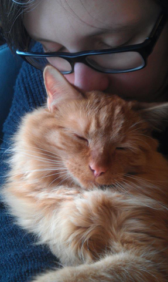

Presentation
Intressen
- Grafik
- - 3D modellering och texturering, att teckna och måla
- Dator- och tvspel
- - Bioshock, Ace Attorney, Professor Layton och Monkey Island är några favoritserier. Spelar just nu mycket L4D2.
- Brädspel och rollspel
- - Gillar väldigt blandade brädspel, den gamla klassikern Drakborgen har en speciell plats i hjärtat. Stort fan av DoD när det kommer till rollspel.
Gillar
- Bakning
- Alla färger
- Böcker, läser just nu:
- Himmelstrand, John Ajvide Lindqvist
- Harry Potter och den flammande bägaren (säkert sjunde gången)
- Katter
- Geocaching
Familj
Bor i Skellefteå med min sambo och våra två katter
Tidigare utbildning
Läste på gymnasiet Estetisk bild och formgivning, efter det har jag slutfört en kandidatexamen i Datorgrafik
Arbetslivserfarenhet
Jag har jobbat inom lite olika områden, men inte riktigt hittat rätt ännu
- Låsmontör
- Vårdbiträde
- 3D-Artist
- Teknisk support
Goda egenskaper
Jag är
- Positiv
- Engagerad
- Kreativ
Dåliga egenskaper
..men är också
- Dålig förlorare
- Virrig
- Grubblare
Programmeringserfarenhet
Mycket låg, i datorgrafikutbildningen ingick en Python-kurs, men det är så långt kunskaperna sträcker sig. Har lekt lite med html och CSS tidigare.
Länkar:
Här kommer tre länkar: